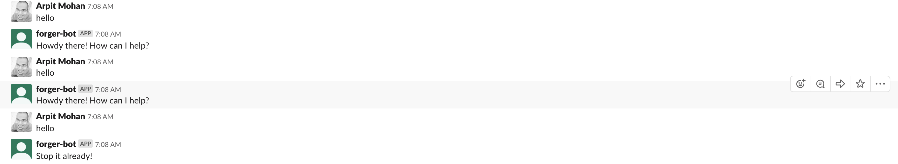
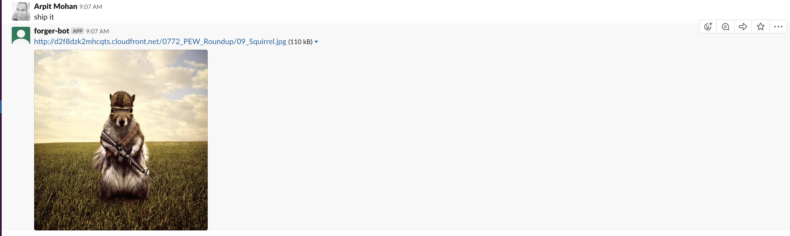
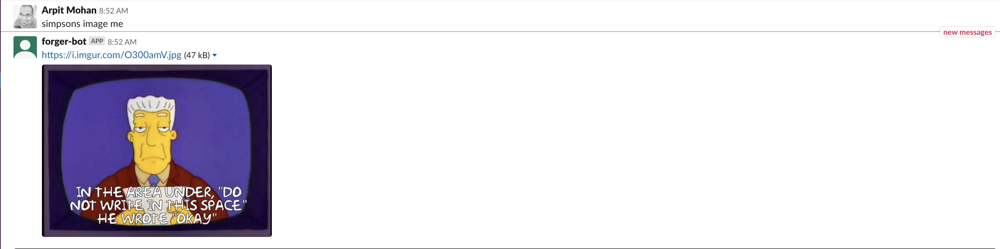
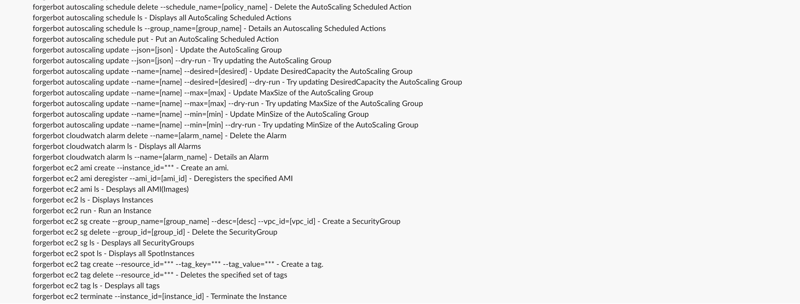

class: center, middle # Ops in the age of Chat Arpit Mohan CTO @ Appsmith --- # What is ChatOps? First there was Dev, then Ops, then DevOps & now *ChatOps* **C'mon! Stop the madness!** --- # Wait, but why? - Single Interface that's familiar & easy to use - Allows for a shared terminal concept (Think: tmux & screen) - No custom logins - Multiple Integrations - Context sharing is simpler - More fun? --- # Example Screenshots  --- # Example Screenshots  --- # Example Screenshots  --- # Example Screenshots  --- # Tools used - Hubot - Slack - Coffee Script - Creativity :D --- # Sample Code for the hello command ```javascript robot.hear /hello|hi$/i, (res) -> response = "" helloResponses = robot.brain.get('helloResponses') * 1 or 0 if helloResponses > 1 res.reply "Stop it already!" #Resetting the count here. Ideally, this key should be reset every hour or so. robot.brain.set 'helloResponses', 0 else res.reply "Howdy there! How can I help?" robot.brain.set 'helloResponses', helloResponses+1 ``` --- # Show me the code https://github.com/mohanarpit/hubot-gitlab-ci --- # Areas of Improvement ```shell @forger-bot Please deploy the master branch to the staging environment ``` ### NLP Parsers - wit.ai - Dialogflow --- # Other Alternatives - Lita (Ruby) - Errbot (Python) --- class: center, middle # Thank You Github: [github.com/mohanarpit](https://github.com/mohanarpit) Website: [arpitmohan.com](https://arpitmohan.com) Twitter: @mohanarpit Email: [me@arpitmohan.com](mailto:me@arpitmohan.com)